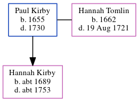

Paul Kirby 1655 - 1730
[ Home ] | [ Calendar ] | [ Surnames Index ] | [ Census Index ] | [ Family History ]Paul Kirby, the 7 times great-grandfather of Nigel Horne, was born in 1655 and married Hannah Tomlin (with whom he had 1 child, Hannah) in St Peters, Thanet, Kent, England on Jan 1, 16851.
He died in 1730.
Children
- Hannah was born c. 1689
Citations
- Kent, East Kent marriage index 1538-1754 - Findmypast
Media
Kent, East Kent marriage index 1538-1754 - GBPRS/EASTKENT/MAR/133267/1
Family Tree
Generated by ged2site. Last updated on Jun 11, 2024